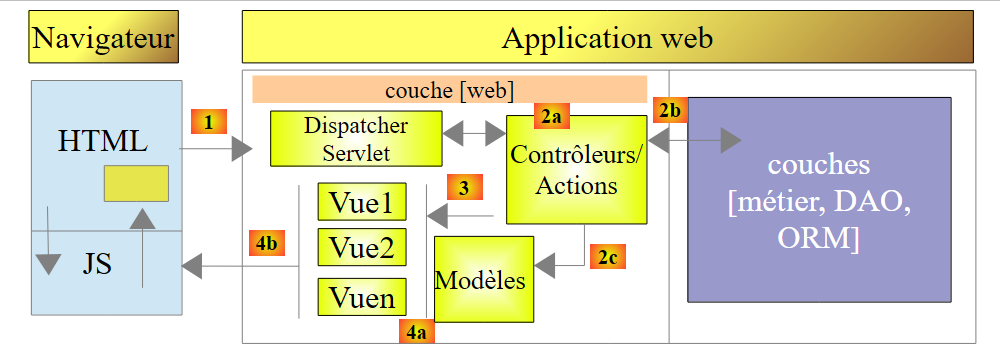
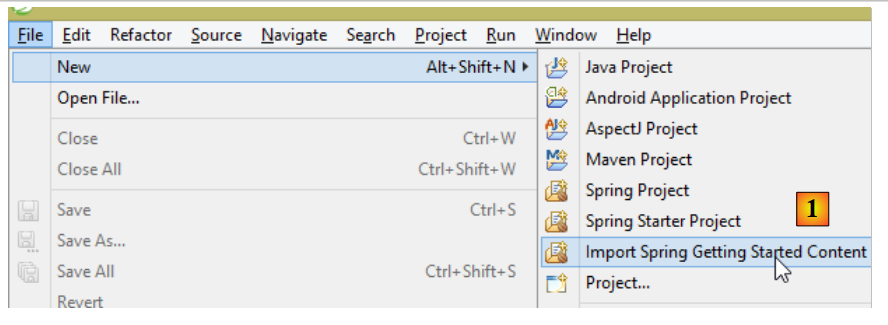
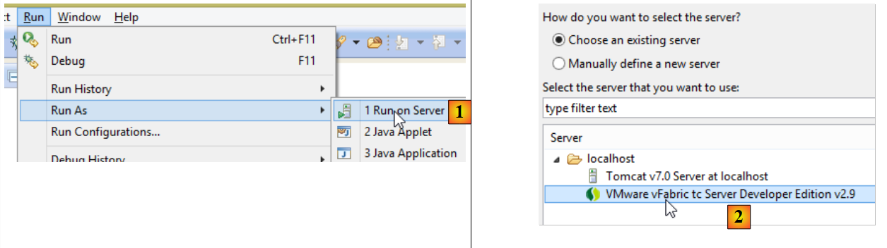

16. مقدمة إلى Spring MVC
16.1. دور Spring MVC في تطبيق الويب
دعونا نضع Spring MVC في سياق تطوير تطبيق ويب. غالبًا ما يتم بناؤه على بنية متعددة المستويات مثل ما يلي:
 |
- الطبقة [Web] هي الطبقة التي تتفاعل مع مستخدم تطبيق الويب. يتفاعل المستخدم مع تطبيق الويب من خلال صفحات الويب المعروضة في المتصفح. يوجد Spring MVC في هذه الطبقة وفقط في هذه الطبقة؛
- تنفذ طبقة [الأعمال] منطق الأعمال الخاص بالتطبيق، مثل حساب الراتب أو الفاتورة. تستخدم هذه الطبقة البيانات الواردة من المستخدم عبر طبقة [الويب] ومن نظام إدارة قواعد البيانات (DBMS) عبر طبقة [DAO]؛
- تدير طبقة [DAO] (كائنات الوصول إلى البيانات) وطبقة [ORM] (مُخطِط العلاقات بين الكائنات) ومحرك JDBC الوصول إلى البيانات في نظام إدارة قواعد البيانات. تعمل طبقة [ORM] كجسر بين الكائنات التي تتعامل معها طبقة [DAO] والصفوف والأعمدة في الجداول الموجودة في قاعدة البيانات العلائقية. تسمح لك مواصفة تسمى JPA (Java Persistence API) بالتجريد من ORM المستخدم إذا كان ينفذ هذه المواصفات. سيكون هذا هو الحال في هذا البرنامج التعليمي، لذا سنشير من الآن فصاعدًا إلى طبقة ORM باسم طبقة JPA؛
- يتم التعامل مع تكامل هذه الطبقات بواسطة إطار عمل Spring؛
16.2. نموذج تطوير Spring MVC
تنفذ Spring MVC نمط الهندسة المعمارية MVC (Model–View–Controller) على النحو التالي:
 |
تتم معالجة طلب العميل على النحو التالي:
- الطلب - تكون عناوين URL المطلوبة على النحو التالي: http://machine:port/contexte/Action/param1/param2/....?p1=v1&p2=v2&... يستخدم [Front Controller] ملف تكوين أو تعليقات Java لتوجيه الطلب إلى وحدة التحكم الصحيحة والإجراء الصحيح داخل تلك الوحدة. وللقيام بذلك، يستخدم حقل [Action] في عنوان URL. يتكون باقي عنوان URL [/param1/param2/...] من معلمات اختيارية سيتم تمريرها إلى الإجراء. يشير الحرف "C" في MVC هنا إلى السلسلة [Front Controller، Controller، Action]. إذا لم تتمكن أي وحدة تحكم من معالجة الإجراء المطلوب، فسيرد خادم الويب بأن عنوان URL المطلوب لم يتم العثور عليه.
- المعالجة
- (تابع)
- يمكن للإجراء المحدد استخدام المعلمات التي مررها إليه [Front Controller]. ويمكن أن تأتي هذه المعلمات من عدة مصادر:
- مسار [/param1/param2/...] لعنوان URL،
- معلمات [p1=v1&p2=v2] لعنوان URL،
- من المعلمات التي أرسلها المتصفح مع طلبه؛
- عند معالجة طلب المستخدم، قد يحتاج الإجراء إلى طبقة [business] [2b]. بمجرد معالجة طلب العميل، يمكن أن يؤدي ذلك إلى استجابات متنوعة. ومن الأمثلة الكلاسيكية على ذلك:
- صفحة خطأ إذا تعذر معالجة الطلب بشكل صحيح
- صفحة تأكيد في الحالات الأخرى
- تقوم الإجراء بتوجيه عرض معين للعرض [3]. سيعرض هذا العرض البيانات المعروفة باسم نموذج العرض. هذا هو الحرف "M" في MVC. سيقوم الإجراء بإنشاء نموذج العرض هذا [2c] وتوجيه العرض للعرض [3]؛
- الاستجابة - تستخدم طريقة العرض المحددة V النموذج M الذي أنشأته الإجراء لتهيئة الأجزاء الديناميكية من استجابة HTML التي يجب إرسالها إلى العميل، ثم ترسل هذه الاستجابة.
بالنسبة لخدمة الويب / JSON، يتم تعديل البنية السابقة بشكل طفيف:
 |
- في [4a]، يتم تحويل النموذج، وهو فئة Java، إلى سلسلة JSON بواسطة مكتبة JSON؛
- في [4b]، يتم إرسال سلسلة JSON هذه إلى المتصفح؛
الآن، دعونا نوضح العلاقة بين بنية الويب MVC والبنية الطبقية. اعتمادًا على كيفية تعريف النموذج، قد يكون هذان المفهومان مرتبطين أو غير مرتبطين. لنفكر في تطبيق ويب Spring MVC أحادي الطبقة:
 |
إذا قمنا بتنفيذ الطبقة [Web] باستخدام Spring MVC، فسنحصل بالفعل على بنية ويب MVC ولكن ليس بنية متعددة الطبقات. هنا، ستتولى الطبقة [Web] كل شيء: العرض، ومنطق الأعمال، والوصول إلى البيانات. والأعمال هي التي ستقوم بتنفيذ هذه المهام.
الآن، دعونا ننظر في بنية ويب متعددة الطبقات:
 |
يمكن تنفيذ طبقة [الويب] بدون إطار عمل وبدون اتباع نموذج MVC. وبذلك نحصل على بنية متعددة الطبقات، لكن طبقة الويب لا تنفذ نموذج MVC.
على سبيل المثال، في عالم .NET، يمكن تنفيذ طبقة [الويب] المذكورة أعلاه باستخدام ASP.NET MVC، مما ينتج عنه بنية متعددة الطبقات تحتوي على طبقة [ويب] بنمط MVC. بعد القيام بذلك، يمكننا استبدال طبقة ASP.NET MVC هذه بطبقة ASP.NET كلاسيكية (WebForms) مع الحفاظ على بقية العناصر (منطق الأعمال، DAO، ORM) دون تغيير. وبذلك نحصل على بنية متعددة الطبقات مع طبقة [Web] لم تعد قائمة على MVC.
في MVC، قلنا إن نموذج M هو نموذج عرض V، أي مجموعة البيانات التي يعرضها عرض V. وهناك تعريف آخر لنموذج M في MVC:
 |
يعتبر العديد من المؤلفين أن ما يقع على يمين طبقة [الويب] يشكل نموذج M في MVC. لتجنب الغموض، يمكننا الإشارة إلى:
- نموذج المجال عند الإشارة إلى كل ما يقع على يمين طبقة [الويب]
- نموذج العرض عند الإشارة إلى البيانات التي تعرضها طريقة العرض V
فيما يلي، سيشير مصطلح "نموذج M" حصريًا إلى نموذج عرض V.
16.3. مشروع Web/JSON باستخدام Spring MVC
يقدم الموقع [http://spring.io/guides] دروسًا تعليمية للمبتدئين لاستكشاف منظومة Spring. سنتبع إحدى هذه الدروس لاكتشاف إعدادات Maven المطلوبة لمشروع Spring MVC.
16.3.1. مشروع العرض التوضيحي
 |
- في [1]، نقوم باستيراد أحد أدلة Spring؛
 |
- في [2]، نختار مثال [Rest Service]؛
- في [3]، نختار مشروع Maven؛
- في [4]، نختار الإصدار النهائي من الدليل؛
- في [5]، نؤكد؛
- في [6]، المشروع المستورد؛
غالبًا ما تُسمى خدمات الويب التي يمكن الوصول إليها عبر عناوين URL قياسية والتي تُرجع بيانات JSON بخدمات REST (REpresentational State Transfer). ويُقال إن الخدمة تتبع نمط RESTful إذا كانت تتبع قواعد معينة.
دعونا الآن نفحص المشروع المستورد، بدءًا من تكوين Maven الخاص به.
16.3.2. تكوين Maven
<?xml version="1.0" encoding="UTF-8"?>
<project xmlns="http://maven.apache.org/POM/4.0.0" xmlns:xsi="http://www.w3.org/2001/XMLSchema-instance"
xsi:schemaLocation="http://maven.apache.org/POM/4.0.0 http://maven.apache.org/xsd/maven-4.0.0.xsd">
<modelVersion>4.0.0</modelVersion>
<groupId>org.springframework</groupId>
<artifactId>gs-rest-service</artifactId>
<version>0.1.0</version>
<parent>
<groupId>org.springframework.boot</groupId>
<artifactId>spring-boot-starter-parent</artifactId>
<version>1.2.2.RELEASE</version>
</parent>
<dependencies>
<dependency>
<groupId>org.springframework.boot</groupId>
<artifactId>spring-boot-starter-web</artifactId>
</dependency>
</dependencies>
<properties>
<start-class>hello.Application</start-class>
</properties>
<build>
<plugins>
<plugin>
<groupId>org.springframework.boot</groupId>
<artifactId>spring-boot-maven-plugin</artifactId>
</plugin>
</plugins>
</build>
<repositories>
<repository>
<id>spring-releases</id>
<url>https://repo.spring.io/libs-release</url>
</repository>
</repositories>
<pluginRepositories>
<pluginRepository>
<id>spring-releases</id>
<url>https://repo.spring.io/libs-release</url>
</pluginRepository>
</pluginRepositories>
</project>
- الأسطر 6–8: خصائص مشروع Maven. هناك علامة [<packaging>] تحدد نوع الملف الذي ينتجه بناء Maven مفقودة. في حالة عدم وجودها، يتم استخدام النوع [jar]. وبالتالي، فإن التطبيق هو تطبيق قابل للتنفيذ قائم على وحدة التحكم، وليس تطبيق ويب، وفي هذه الحالة سيكون التعبئة [war]؛
- الأسطر 10-14: يحتوي مشروع Maven على مشروع أب [spring-boot-starter-parent]. يحدد هذا معظم تبعيات المشروع. قد تكون كافية، وفي هذه الحالة لا تضاف أي تبعيات إضافية، أو قد لا تكون كافية، وفي هذه الحالة تضاف التبعيات المفقودة؛
- الأسطر 17-20: تتضمن الأداة [spring-boot-starter-web] المكتبات اللازمة لمشروع خدمة ويب Spring MVC حيث لا يتم إنشاء أي عروض. تتضمن هذه الأداة عددًا كبيرًا جدًا من المكتبات، بما في ذلك تلك الخاصة بخادم Tomcat المدمج. سيتم تشغيل التطبيق على هذا الخادم؛
المكتبات المضمنة في هذا التكوين عديدة:
 |  |
أعلاه، نرى الأرشيفات الثلاثة لخادم Tomcat.
16.3.3. بنية خدمة Spring [web / JSON]
بالنسبة لخدمة الويب/JSON، يقوم Spring MVC بتنفيذ نموذج MVC على النحو التالي:
 |
- في [4a]، يتم تحويل النموذج — وهو فئة Java — إلى سلسلة JSON بواسطة مكتبة JSON؛
- في [4b]، يتم إرسال سلسلة JSON هذه إلى المتصفح؛
16.3.4. وحدة التحكم C
 |
يحتوي التطبيق المستورد على وحدة التحكم التالية:
package hello;
import java.util.concurrent.atomic.AtomicLong;
import org.springframework.web.bind.annotation.RequestMapping;
import org.springframework.web.bind.annotation.RequestParam;
import org.springframework.web.bind.annotation.RestController;
@RestController
public class GreetingController {
private static final String template = "Hello, %s!";
private final AtomicLong counter = new AtomicLong();
@RequestMapping("/greeting")
public Greeting greeting(@RequestParam(value = "name", defaultValue = "World") String name) {
return new Greeting(counter.incrementAndGet(), String.format(template, name));
}
}
- السطر 9: تجعل العلامة التوضيحية [@RestController] فئة [GreetingController] وحدة تحكم Spring، مما يعني أن طرقها مسجلة لمعالجة عناوين URL. لقد رأينا العلامة التوضيحية المماثلة [@Controller]. كان نوع الإرجاع لطرق تلك الوحدة هو [String]، وهو اسم العرض المراد عرضه. هنا، الأمر مختلف. تُرجع أساليب [@RestController] كائنات يتم تسلسلها لإرسالها إلى المتصفح. يعتمد نوع التسلسل الذي يتم إجراؤه على تكوين Spring MVC. هنا، سيتم تسلسلها إلى JSON. إن وجود مكتبة JSON في تبعيات المشروع هو ما يجعل Spring Boot يقوم تلقائيًا بتكوين المشروع بهذه الطريقة؛
- السطر 14: تحدد العلامة [@RequestMapping] عنوان URL الذي تعالجه الطريقة، وهو في هذه الحالة عنوان URL [/greeting]؛
- السطر 15: سبق أن شرحنا التعليق التوضيحي [@RequestParam]. والنتيجة التي ترجعها الطريقة هي كائن من النوع [Greeting].
- السطر 12: عدد صحيح طويل من النوع الذري. وهذا يعني أنه يدعم الوصول المتزامن. قد ترغب خيوط متعددة في زيادة متغير [counter] في نفس الوقت. وسيتم التعامل مع هذا بشكل صحيح. لا يمكن للخيط قراءة قيمة العداد إلا بعد أن ينتهي الخيط الذي يقوم بتعديله حاليًا من تعديله.
16.3.5. نموذج M
نموذج M الناتج عن الطريقة السابقة هو كائن [Greeting] التالي:
 |
package hello;
public class Greeting {
private final long id;
private final String content;
public Greeting(long id, String content) {
this.id = id;
this.content = content;
}
public long getId() {
return id;
}
public String getContent() {
return content;
}
}
سيؤدي تحويل JSON لهذا الكائن إلى إنشاء السلسلة {"id":n,"content":"text"}. وفي النهاية، ستكون سلسلة JSON الناتجة عن طريقة وحدة التحكم بالشكل التالي:
أو
16.3.6. التنفيذ
 |
تعد فئة [Application.java] هي الفئة القابلة للتنفيذ في المشروع. وفيما يلي شفرة البرمجة الخاصة بها:
package hello;
import org.springframework.boot.autoconfigure.EnableAutoConfiguration;
import org.springframework.boot.SpringApplication;
import org.springframework.context.annotation.ComponentScan;
@ComponentScan
@EnableAutoConfiguration
public class Application {
public static void main(String[] args) {
SpringApplication.run(Application.class, args);
}
}
لقد سبق أن تناولنا هذا الكود وشرحناه في المثال السابق. دعونا نقوم بتشغيل المشروع:
 |
نحصل على سجلات وحدة التحكم التالية:
- السطر 13: يبدأ خادم Tomcat على المنفذ 8080 (السطر 12)؛
- السطر 17: وجود سيرفلت [DispatcherServlet]؛
- السطر 20: تم اكتشاف الطريقة [GreetingController.greeting]؛
لاختبار تطبيق الويب، نطلب عنوان URL [http://localhost:8080/greeting]:
 |  |
نتلقى سلسلة JSON المتوقعة. قد يكون من المثير للاهتمام عرض رؤوس HTTP المرسلة من الخادم. للقيام بذلك، سنستخدم ملحق Chrome المسمى [Advanced Rest Client] (Chrome / Ctrl-T / قائمة [التطبيقات] / [Advanced Rest Client] - انظر الملاحق، الفقرة 23.11):
 |
- في [1]، عنوان URL المطلوب؛
- في [2]، يتم استخدام طريقة GET؛
- في [3]، استجابة JSON؛
- في [4]، أشار الخادم إلى أنه يرسل استجابة بتنسيق JSON؛
- في [5]، يتم طلب نفس عنوان URL، ولكن هذه المرة باستخدام طلب POST؛
- في [7]، يتم إرسال المعلومات إلى الخادم بتنسيق [urlencoded]؛
- في [6]، المعلمة name مع قيمتها؛
- في [8]، يُخبر المتصفح الخادم بأنه يرسل بيانات [urlencoded]؛
- في [9]، رد JSON من الخادم؛
16.3.7. إنشاء أرشيف قابل للتنفيذ
سنقوم الآن بإنشاء أرشيف قابل للتنفيذ:
 |
 |
- في [1]: نقوم بتشغيل هدف Maven؛
- في [2]: هناك هدفان: [clean] لحذف مجلد [target] من مشروع Maven، و[package] لإعادة إنشائه؛
- في [3]: سيكون المجلد [target] الذي تم إنشاؤه موجودًا في هذا المجلد؛
- في [4]: تم إنشاء الهدف؛
في السجلات التي تظهر في وحدة التحكم، من المهم رؤية [spring-boot-maven-plugin] مدرجًا. هذا هو المكون الإضافي الذي يُنشئ الأرشيف القابل للتنفيذ (انظر [pom.xml] أدناه):
<build>
<plugins>
<plugin>
<groupId>org.springframework.boot</groupId>
<artifactId>spring-boot-maven-plugin</artifactId>
</plugin>
</plugins>
</build>
في موجه الأوامر، انتقل إلى المجلد الذي تم إنشاؤه:
D:\Temp\wksSTS\gs-rest-service\target>dir
...
11/06/2014 15:30 <DIR> classes
11/06/2014 15:30 <DIR> generated-sources
11/06/2014 15:30 11 073 572 gs-rest-service-0.1.0.jar
11/06/2014 15:30 3 690 gs-rest-service-0.1.0.jar.original
11/06/2014 15:30 <DIR> maven-archiver
11/06/2014 15:30 <DIR> maven-status
...
- السطر 5: الأرشيف الذي تم إنشاؤه؛
يتم تنفيذ هذا الأرشيف على النحو التالي:
D:\Temp\wksSTS\gs-rest-service-complete\target>java -jar gs-rest-service-0.1.0.jar
. ____ _ __ _ _
/\\ / ___'_ __ _ _(_)_ __ __ _ \ \ \ \
( ( )\___ | '_ | '_| | '_ \/ _` | \ \ \ \
\\/ ___)| |_)| | | | | || (_| | ) ) ) )
' |____| .__|_| |_|_| |_\__, | / / / /
=========|_|==============|___/=/_/_/_/
:: Spring Boot :: (v1.1.0.RELEASE)
2014-06-11 15:32:47.088 INFO 4972 --- [ main] hello.Application
: Starting Application on Gportpers3 with PID 4972 (D:\Temp\wk
sSTS\gs-rest-service-complete\target\gs-rest-service-0.1.0.jar started by ST in
D:\Temp\wksSTS\gs-rest-service-complete\target)
...
الآن بعد أن أصبح تطبيق الويب قيد التشغيل، يمكنك الوصول إليه باستخدام متصفح:
 |
16.3.8. نشر التطبيق على خادم Tomcat
كما فعلنا في المشروع السابق، نقوم بتعديل ملف [pom.xml] على النحو التالي:
<?xml version="1.0" encoding="UTF-8"?>
<project xmlns="http://maven.apache.org/POM/4.0.0" xmlns:xsi="http://www.w3.org/2001/XMLSchema-instance"
xsi:schemaLocation="http://maven.apache.org/POM/4.0.0 http://maven.apache.org/xsd/maven-4.0.0.xsd">
<modelVersion>4.0.0</modelVersion>
<groupId>org.springframework</groupId>
<artifactId>gs-rest-service</artifactId>
<version>0.1.0</version>
<packaging>war</packaging>
...
</project>
- السطر 9: يجب تحديد أنك تقوم بإنشاء ملف WAR (أرشيف ويب)؛
يجب عليك أيضًا تكوين تطبيق الويب. إذا لم يكن هناك ملف [web.xml]، يتم ذلك باستخدام فئة تمتد من [SpringBootServletInitializer]:
 |
فيما يلي فئة [ApplicationInitializer]:
package hello;
import org.springframework.boot.builder.SpringApplicationBuilder;
import org.springframework.boot.context.web.SpringBootServletInitializer;
public class ApplicationInitializer extends SpringBootServletInitializer {
@Override
protected SpringApplicationBuilder configure(SpringApplicationBuilder application) {
return application.sources(Application.class);
}
}
- السطر 6: فئة [ApplicationInitializer] تمتد من فئة [SpringBootServletInitializer]؛
- السطر 9: يتم تجاوز طريقة [configure] (السطر 8)؛
- السطر 10: يتم توفير الفئة التي تقوم بتكوين المشروع؛
لتشغيل المشروع، اتبع الخطوات التالية:
 |
- في [1-2]، قم بتشغيل المشروع على أحد الخوادم المسجلة في بيئة تطوير Eclipse؛
بمجرد الانتهاء من ذلك، يمكنك طلب عنوان URL [http://localhost:8080/gs-rest-service/greeting/?name=Mitchell] في متصفح:
 |
16.4. الخلاصة
لقد قدمنا نوعًا من مشاريع Spring MVC حيث يرسل التطبيق الويب دفق JSON إلى المتصفح. سنقوم الآن بتطوير تطبيق ويب/JSON لعرض قاعدة البيانات [dbproduitscategories] التي تمت دراستها في الفصول السابقة على الويب.